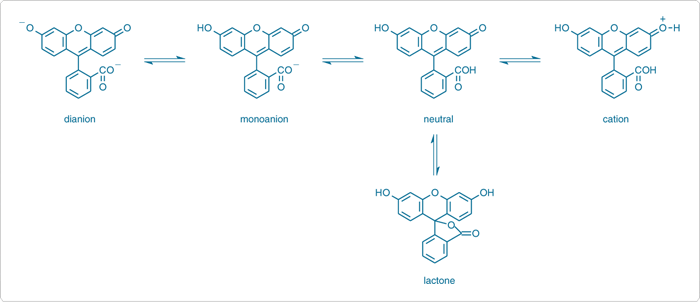

Fluorescence is a type of optical spectroscopy in which a molecule is first promoted to an electronically excited state by absorption of ultraviolet, visible, or near infrared radiation and then the excited molecule decays back to the ground state (or to a lower-lying excited electronic state) by emission of light. Molecules that fluoresce are called fluorophores. Many fluorophores exist in different molecular and ionic forms depending on the pH of the solution and environment of the fluorophore. The acidic or basic properties of the fluorophore molecule in the excited state differ from that in the ground state due to the redistribution of the electron density upon electronic excitation. These different molecular and ionic forms essentially turns out to be energetically different absorbing and emitting species of the fluorophore. The life times of fluorophores may increase or decrease depending on the change in pH. Collisional quenching by protons usually results in a shortened decay time. These are functions of both the light absorbing group (chromophore) and other chemical functional groups bound to the fluorophore molecule. These make the absorption and fluorescence spectra pH- and environment-dependent. Thus, one can use the fluorescence characteristics of fluorescent (probe) molecules to make inferences about the (acid-base) properties of immediate molecular environment of the probe molecule. Fluorescent probe studies find important applications in biological science.

To study how the fluorescence excitation and emission spectral characteristics of fluorescein molecule change upon changing the pH of the solution.

Absorption and fluorescence spectral characteristics, such as wavelengths, intensities and bandwidths, of a molecule depend strongly on the actual form of the molecule in the solution. The forms of the molecule depend on the natures of both the molecule and the solvent and the pH of the solution. For example, fluorescein molecule, a commonly used biological probe, appears in various ionic and neutral forms like cation, monoanion, dianion, and neutral forms depending on the pH values of the solution (Figure 1). This leads to its pH-dependent absorption and emission spectra.
Figure 1: Different molecular forms of fluorescein.
In aqueous solution, fluorescein exists in cationic, anionic, and neutral forms depending on the pH. It has a phenol and a carboxylic acid functional group and exhibits multiple pH-dependent ionic equilibria. Both the functional groups of fluorescein are almost totally ionized in aqueous solutions above pH 9. Upon acidification, i.e., upon decreasing the pH, the fluorescein dianion protonates first to form the phenol (pKa ~6.4) giving rise to the fluorescein monoanion (carboxylate). Next the carboxylate anion protonates (pKa ~4.3) forming neutral species of fluorescein. Upon further acidification, a fluorescein cation (pKa ~2.1) is formed. In the pH range 2 to 4, fluorescein exists mainly in neutral form along with a small number of monoanion and dianion forms in the solution. The number of the monoanion increases with the increase in pH values in the range of pH = 4.3 - 6.47. The dianion form becomes the most prevalent form at further high pH.
The dianion has its main absorption peak 490 nm (εM = 76900 M-1cm-1) with a shoulder at ~475 nm. The monoanion has two peaks at ~453 nm and ~472 nm with almost similar εM = 29000 M-1cm-1. The neutral species has a peak at ~435 nm in the visible spectral region with lowest absorption (εM = 11000 M-1cm-1) of all the species. A blue shift and a decrease in absorbance in the absorption spectra of fluorescein have been observed with the decrease in pH.
The neutral and monoanion forms of fluorescein have similar fluorescence spectra in aqueous solution. The dianion form shows a narrower emission band. The lactonic form does not contribute to the fluorescence much because it does not absorb in the visible spectrum. The lactone form is prevalent in organic solvents. Therefore, it is interesting to study pH-dependent fluorescence of fluorescein in organic solvents. Though we are familiar with pH of aqueous solutions, the hydrogen ion concentration can also be measured in organic solvents like methanol, ethanol, etc. The pH of the solutions of fluorescein in methanol is ~4. Therefore, the methanolic solution is expected to contain mostly the monoanion form of fluroscein with a few dianions. Aqueous NaOH solutions can be added to methanolic solution to increase the pH from 4 to 6.4 or more where dianion form of fluorescein dominates. Thus the excitation and emission spectra vary with varying pH of the solution. The difference between the maximum excitation and emission wavelength represents the Stokes shift, the energy lost during relaxation.

- Prepare a 250 mL solution of 6.4 x 10-4M fluorescein in spectroscopy grade methanol. Here it is shown in a volumetric flask.
- Take 100 mL of this solution in a beaker and measure the pH of the solution by using a pH-meter. The pH of the methanol solution used here was ~4. Note that prior to pH measurement the pH-meter should be calibrated with appropriate buffer solutions.
- Add a few drops of 1 N NaOH solution to the solution in the beaker to raise the solution pH value to ~6.4.
- Run the excitation and emission spectra of both pH 4 and 6.4 solutions of fluorescein in methanol.
- To commence the measurements, click on the pop-up: Start Fluorescence Measurement.
- Click on the volumetric flask containing pH 4 fluorescein solution to take it onto the experiment table.
- Take an all-side-transparent quartz cuvette (path length, 1 cm x1 cm) by clicking on it.
- Click on the 5 mL capacity pipette to collect 3 mL of the pH 4 fluorescein solution which will be transferred into the quartz cuvette. In real operation, one has to set the volume to 3 mL in the pipette and an appropriate tip should be attached prior to dipping it in the solution.
- Click on the pipette to draw the solution into it.
- Click on the pipette to take it out of the volumetric flask.
- Click on the pipette again to transfer the solution into the cuvette.
- Start fluorescence measurement to run the Excitation and Emission Spectral Scans of the sample on the spectrofluorimeter as follows.
- Turn on the spectrofluorimeter by clicking on the power button. In real operation, it takes approx. 30 min for initialization of the instrument.
- Click on the lid of the sample chamber of the spectrofluorimeter to open it for placing the sample in the instrument.
- To place the cuvette in the sample holder of the chamber, click on the cuvette.
- Close the lid of the sample chamber by clicking on the lid.
- To run the Excitation Spectral Scan of the sample, open the instrument set-up screen by clicking on the fluorescence measurement icon on the computer monitor.
- Select the Excitation Scan Mode on the screen.
- On the screen, enter the Emission wavelength: 514 nm, Excitation Start Wavelength: 350 nm and Excitation End wavelength: 600 nm. One chooses the Excitation Slit(nm) and Emission Slit(nm) values (here 1.5 nm/1.5 nm) and the scan speed value (here very fast ) also.
- Click on OK button on the set-up screen to run the wavelength scan for the excitation spectrum.
- Click on Close button when spectral scan is complete. In real operation, the scan data are stored in the computer. The instrument stores data and therefore asks for the Sample File name. One enters a file name to save the data.
- To run the Emission Spectral Scan of the sample, open the instrument set-up screen by clicking on the fluorescence icon on the computer monitor.
- Select the Emission Scan Mode on the screen.
- On the screen, enter the Excitation wavelength: 490 nm, Emission Start Wavelength: 500 nm and Emission End wavelength: 600 nm. One chooses the Excitation Slit(nm) and Emission Slit(nm) values (here 1.5 nm/1.5 nm) and the scan speed value (here very fast ) also.
- Click on the OK button on the set-up screen to run the wavelength scan for emission spectrum. One has to be sure that the solvent blank does not fluoresce in the wavelength range of interest.
- Click on Close button when spectral scan is complete. In real operation, the scan data are stored in the computer. The instrument stores data and therefore asks for the Sample File name. One enters a file name to save the data.
- To take the cuvette out of the sample chamber, first click on the sample chamber lid to open it and then on the cuvette.
- Close the lid of the sample chamber by clicking on it.
- Click on Reset button to start over the measurements.
- Click on the beaker containing pH 6.4 fluorescein solution to take it onto the experiment table. In real measurements, if one uses the same cuvette for the measurement, one should rinse the cuvette by taking a small portion of the experimental solution to be analyzed prior to filling up the cuvette with the solution. (Why?)
- Repeat the Excitation and Emission scans for this solution.
- For the Excitation Spectral Scan of the sample: Enter the Emission wavelength: 531 nm, Excitation Start Wavelength: 350 nm and Excitation End wavelength: 600 nm. Excitation Slit(nm) and Emission Slit(nm) values are 1.5 nm/1.5 nm and the scan speed value is set to very fast .
- For the Emission Spectral Scan of pH 6.4 fluorescein solution: Enter the Excitation wavelength: 490 nm, Emission Start Wavelength: 500 nm and Emission End wavelength: 600 nm. Excitation Slit(nm) and Emission Slit(nm) values are 1.5 nm/1.5 nm and the scan speed value is set to very fast .
- Collect all data by clicking on the Data tab.
- Find out the excitation maximum, emission maximum wavelengths and intensities for two different pH solutions of fluorescein.
- Calculate the excitation and emission fluorescence maxima in wave-number/cm-1 unit and determine the Stokes shifts (in wave-number unit, cm-1) for variation in pH values.
- Discuss your results.


Pre-Experiment
- What are the advantages of using fluorescein molecule for pH-dependent fluorescence studies?
- What kind of electronic transition is responsible for fluorescence in fluorescein molecule?
- Which proton is lost last from the fluorescein molecule when fluorescein reacts with NaOH?
- Methanolic solution of fluorescein is acidic, pH= 4. How can you explain this?
Post-Experiment
- Out of two carboxylic acid forms, which form of fluorescein molecule fluoresces most intensely?
- Which molecular form of fluorescein molecule requires more energy for electronic transition?
- Why did the shoulder peaks appear in the excitation and emission spectra when NaOH was not added?
- How do the Stokes shifts vary depending on the pH of the solution?

- M. M. Martin and L. Lindqvist, The pH Dependence of Fluorescein Fluorescence. Journal Of Luminescence 1975, 10, 381.
- V. Zanker and W. Peter, Chem. Ber. 1958, 91, 572.
- A. Cook and A. Le, The Effect of Solvent and pH on the Fluorescence Excitation and Emission Spectra of Solutions Containing Fluorescein. J. Phys. Chem. Lab 2006 , 10, 44.
- R. Sjoback, J. Nygren, and M. Kubista, Absorption and fluorescence properties of fluorescein. Spectrochimica Acta Part A, 1995, 51, L7-L21.
- N. Klonis and W. H. Sawyer, Effect of Solvent-Water Mixtures on the Prototropic Equilibria of Fluorescein and on the Spectral Properties of the Monoanion. Photochem. and Photobiol. 2000, 72, 79.
- B. Valeur, Molecular Fluorescence: Principles and Applications, 2002, Wiley-VCH, Weinheim.
- J. R. Albani, Principles and Applications of Fluorescence Spectroscopy, 2007, Blackwell Science Science Ltd, Oxford, UK.
- J. R. Lakowicz, Principles of Fluorescence Spectroscopy, 2nd Ed., Kluwer Academic/Plenum Publishers, New York, London, Moscow, Dordrecht, 1999.
- D. M. Jameson et al. in Basic Concepts in Fluorescence, Fluorescence: Basic Concepts, Principles Aspects and some Anecdotes, Methods Enzymol. 2003, 360, 1.
- P. Atkins and J. D. Paula, Atkin's Physical Chemistry, 9th Edition, Oxford University Press.
 Experiments
Experiments Feedback
Feedback